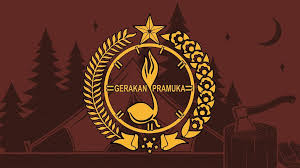

| Nama Ekstra | Jadwal Hari Ekstra | Jumlah Anggota |
|---|---|---|
| Pramuka | Jumat | 40 |
| Podcast | Jumat | 17 |
| Catur | Jumat/Sabtu | 30 |
| Renang | Sabtu/Minggu | 60 |

Pramuka
Ekstrakurikuler Pramuka adalah kegiatan di sekolah yang bertujuan untuk mengembangkan karakter, keterampilan, dan kecakapan hidup peserta didik.

Catur
Ekstrakulikuler Catur merupakan salah satu kegiatan yang mangakomodir siswa yang mempunyai minat dalam bidang catur. Kegiatan ini diharapkan dapat memberikan pengalaman yang lebih terhadap siswa dengan melakukan permainan sparing antar siswa.
Podcast
Podcast adalah ekstra yang melatih kita untuk berani tampil di depan umum, dan belajar menjadi Jurnalis
Renang
Ekstrakulikuler renang bukan hanya tentang belajar berenang dengan baik, tetapi juga tentang kebugaran dan kesehatan. Siswa-siswa kami menghargai pentingnya menjaga tubuh mereka tetap aktif dan sehat melalui olahraga renang.